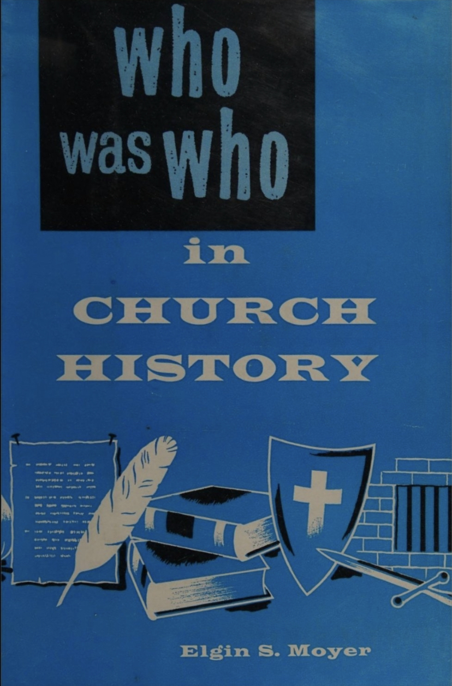
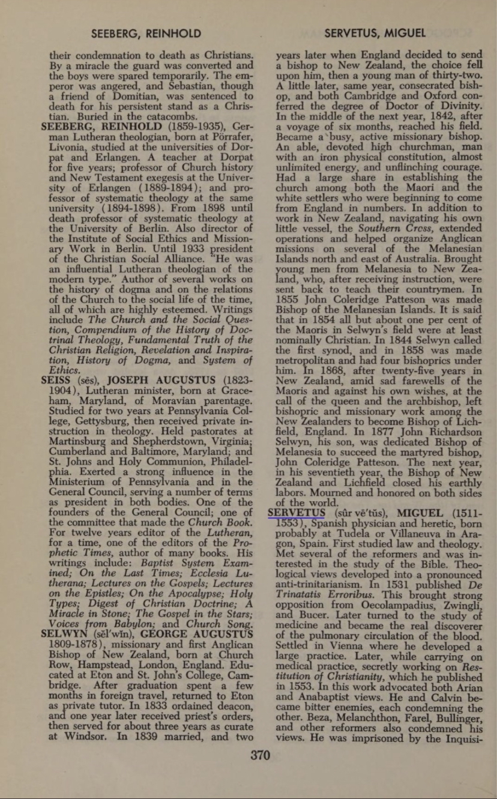
John Calvin, an influential Protestant reformer whom the Presbyterian and the Baptists follow (aka Calvanist), burned his opponent Michael Servetus alive for the Heretical views.
See:
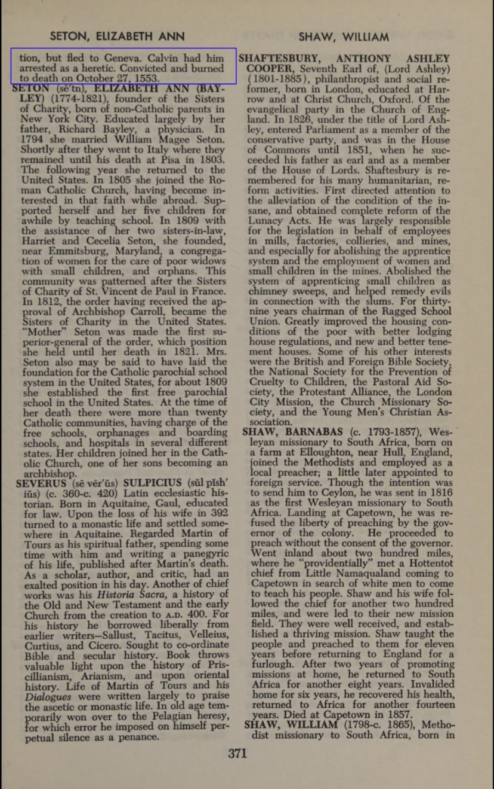
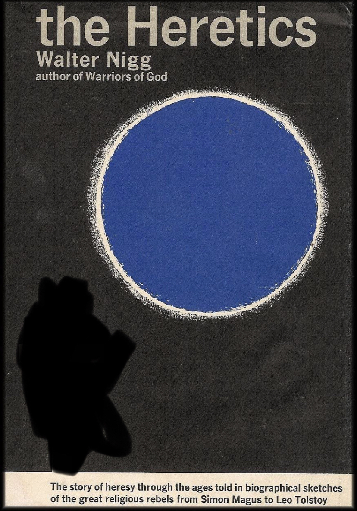
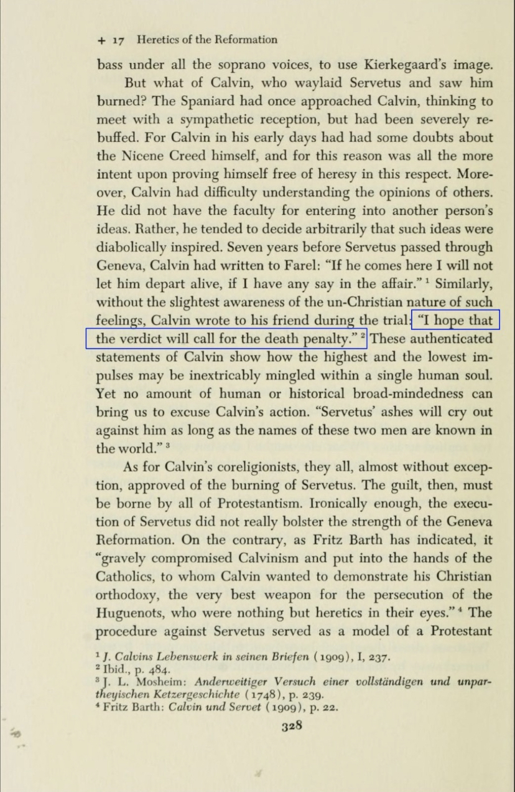
Michael hoped he get executed instead of getting Burned alive
http://lhim.org/blog/2012/07/09/michael-servetus-martyred-by-john-calvin-3/
but instead of accepting the plea to mercy, he was burned alive in green woods and sulfur was added to prolong his suffering.⬆️
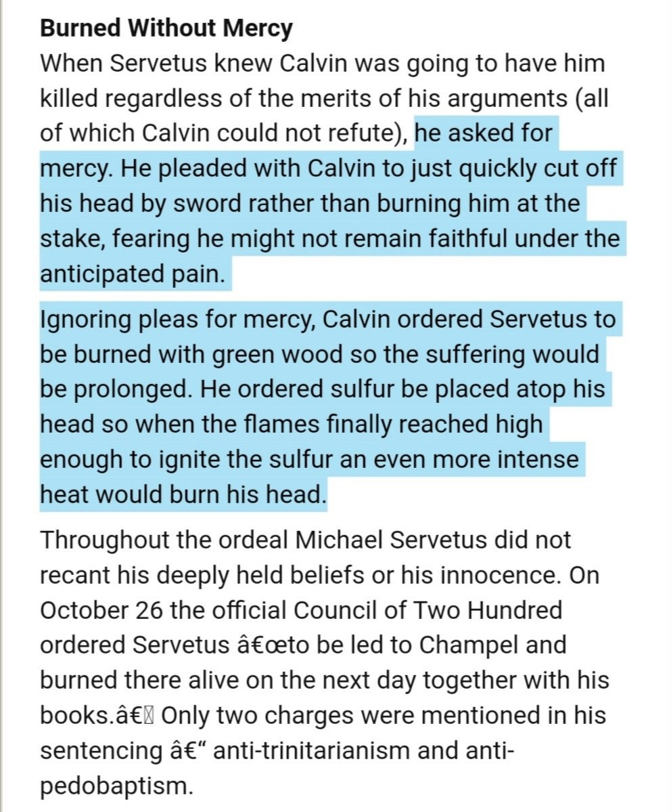
also read the following thread, it goes more in depth about death penalty in Christianity:
Twitter Link
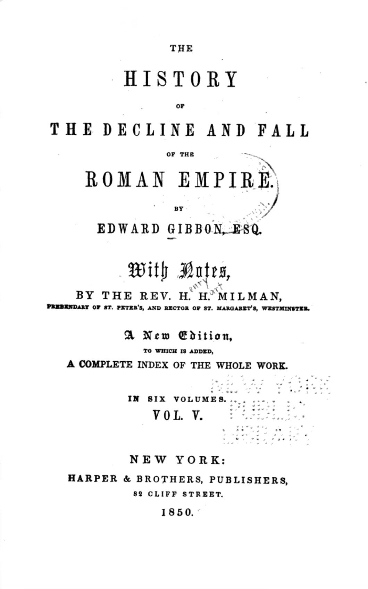
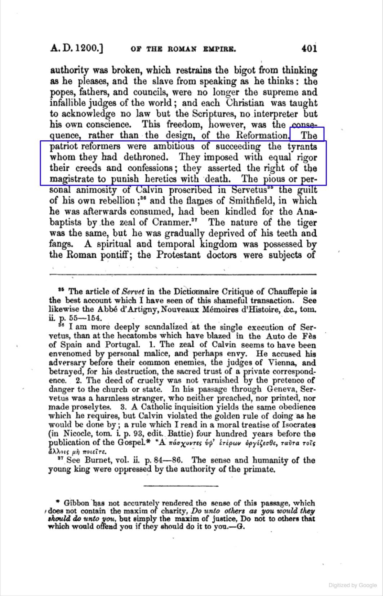
Renowned Historian, Edward Gibbon writes:
“The patriot reformers were ambitious of succeeding tyrants whom they had dethroned. They asserted the right of the magistrate to punish heretics with death”.
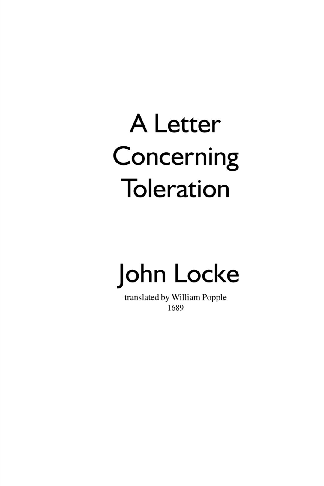
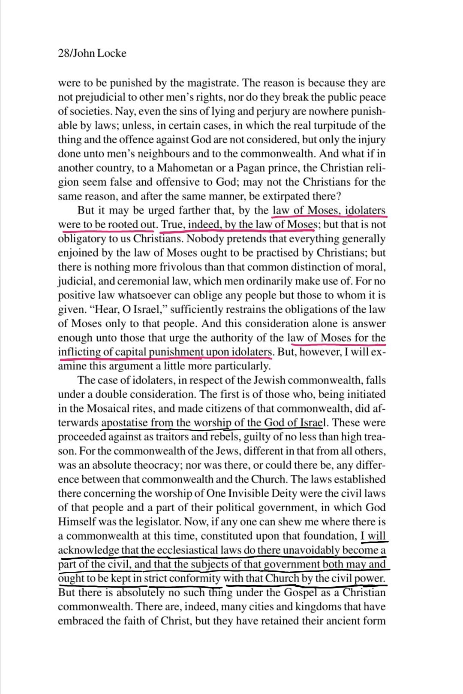
So my question to thoose liberal Christians who object to the Apostasy Law in islam, would you be consistent and agree Triniteriansm is false because you had to kill people who opposed it?
Leviticus 24 deuteronomy 13
tells us the ruling on someone who leaves the religion of the bani Israeli, they must be put to death if they blasphemy god or leave the religion
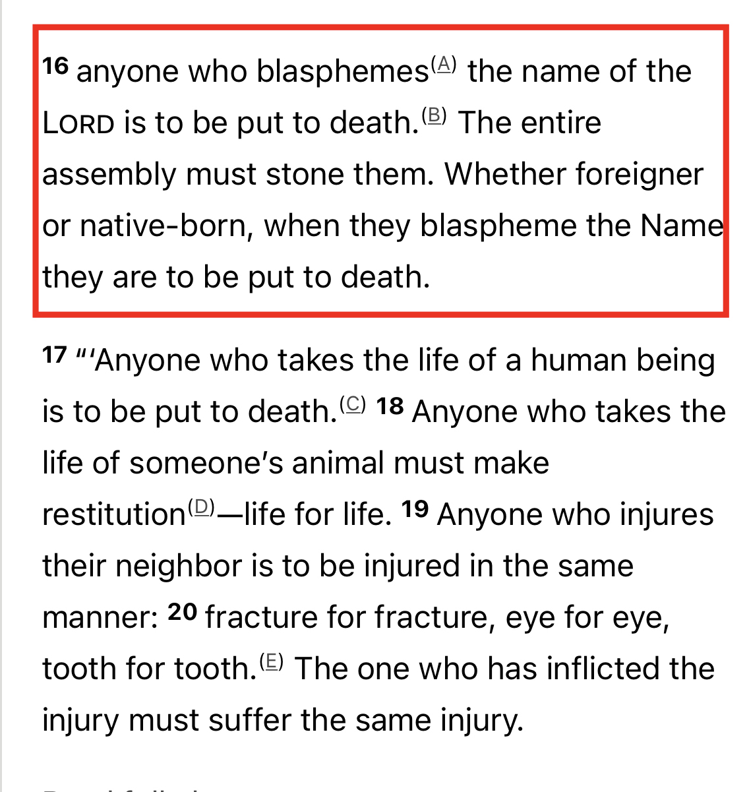
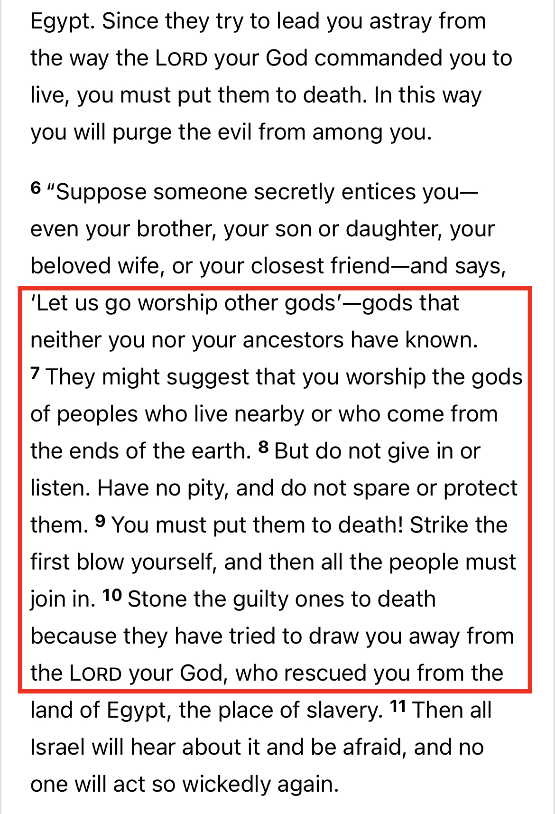